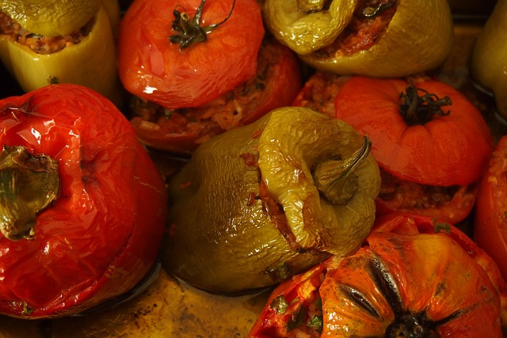

Back to Homepage
Stuffed Peppers with Beef

Description
Bell peppers filled with savory ground beef, rice, and melty cheese — a comfort classic that tastes like a hug in a roasted shell. It’s the kind of meal that makes neighbors jealous.
Ingredients
- 6 bell peppers, any color
- 3 cups chunky tomato sauce
- 1 onion, very thinly sliced
- ½ cup beef broth
- 1/2 ts red pepper flakes
- 1 pounds ground beef
- 1 cup cooked rice
- 1 cup freshly shredded cheese
- 4 cloves garlic, minced
- 1/4 cup fresh flat-leaf parsley chopped
- 1 ts salt and black pepper or to taste
Steps
- Prep the peppers: Cut off tops, scoop out seeds, and lightly roast or blanch the peppers to soften.
- Brown the beef: Sauté ground beef with onion and garlic until golden.
- Flavor bomb: Stir in tomato paste, cooked rice, herbs (oregano, thyme), and salt & pepper.
- Cheese magic: Mix in shredded cheese (cheddar, mozzarella, or whatever you love).
- Fill 'em up: Stuff the peppers generously with the beef-rice mixture.
- Top it off: Sprinkle with more cheese or breadcrumbs for a golden crown.
- Bake to glory: Place in a baking dish, cover with foil, and bake at 190 °C (375 °F) for 25–30 min.
- Final melt: Remove foil for the last 5–10 min to brown the top. Serve warm and proud.